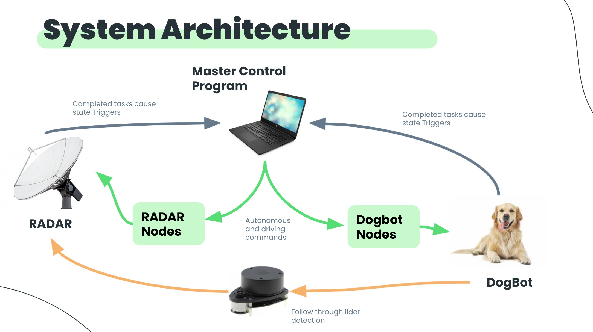

Turtlebot Search & Rescue


Watch a Demo
Vision Statement
Search and Rescue uses a UGV, specifically a turtlebot, to search and rescue its fellow companion. The point of our project is to simulate a real world search and rescue operation. While one turtlebot is exploring its terrain, it gets losts and sends a rescue signal for help. To better simulate a real world operation, the sent location of the turtlebot in distress is “scrambled” to an area with a certain radius. A second turtlebot will receive this scrambled signal and make its way to the general area to rescue it. After scouting the area and finding the lost turtlebot, it will rescue it and lead it back to its homebase.
Process
In the beginning stages of our project, we used the Kanban Board on Trello to plan the tasks that were to be completed and any sort of fixes that were to be made. Our main tasks were completed sequentially with out group: 1. Enviroment set up - making sure all the packages were working and all dependencies were installed 2. Define the Map - this involved figuring out what the space would look like where the dogbot would get "lost" 2. Modify the Navigator class - fixed bugs from before and updated it to reflect changes made in main 3. Unit tests - for Navigator class 4. Update main code with new Navigator class 5. Test turtlebot/dogbot/RADAR functionality A. Have dogbot get "lost" B. Run 2 turtlebots at the same time C. Get turtlebots to follow each other
How it works?
Check out the documentation at our GitHub page: Click here
Requirements and Hazards
Per the Requirements: 1. Our dogbot will wandering off to a "randomized" location 2. The second turtlebot, RADAR should search for the dogbot 3. Once that turtlebot is found, it should follow the "rescuer" turtlebot back to the intial location. Given these requirements, the main hazards included: 1. Potential collision of two turtlebots 2. Dogbot would not sense the RADAR turtlebot, therefore remaining "lost" 3. Namespace issues and running packages incorrectly would prohibit turtlebots from moving at the same time
Architecture and Testing
Most of our testing was done through acceptance testing. Because most of our commands were packages (autonomous navigation and follower), they had existing unit and integration tests that were thoroughly tested. Additionally, because our functions would not work unless a Turtlebot was already successfully connected (otherwise they would throw errors), our unit tests really tested our own functions (mostly OS commands). As a whole, we focused more thoroughly on acceptance tests. For us, this meant multiple checks in the code for any errors along the way that would result in an error message and an exit command. This also meant simplifying the room for error the user experiences: instead of running multiple commands in multiple terminals, we stored all those commands in our python code as OS commands to run the packages. We executed our code in multiple mazes and setups in multiple circumstances. In the future, to more thoroughly test our code, we could implement mock objects in the form of certain classes to have further tests. As for our Architecture, it is shown below:
